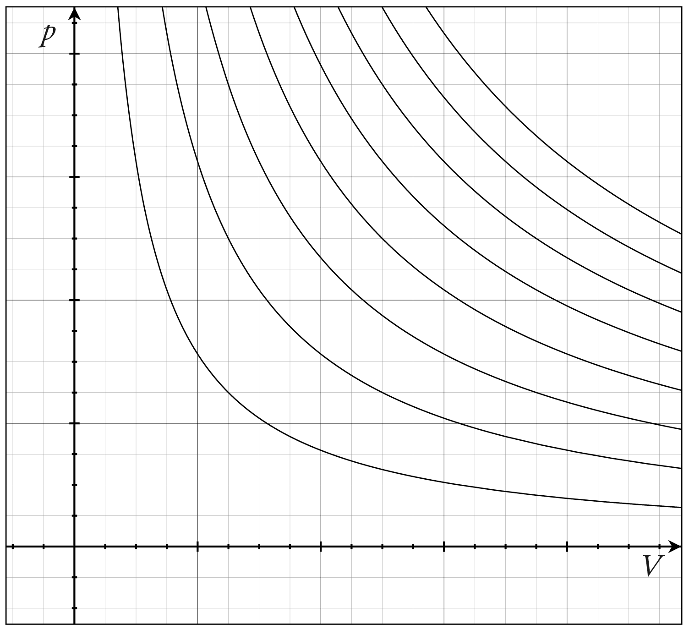
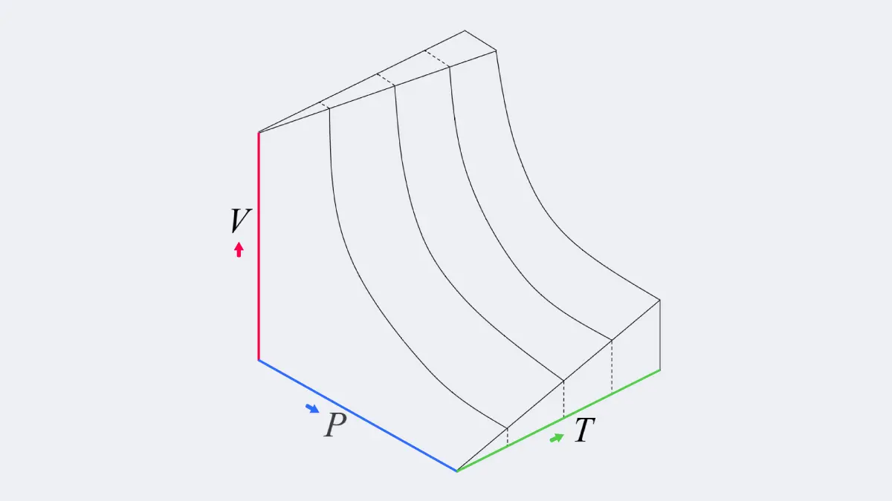
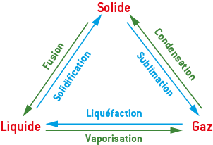
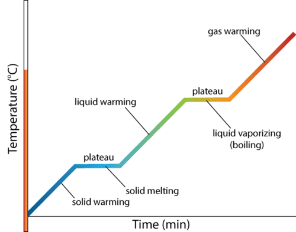
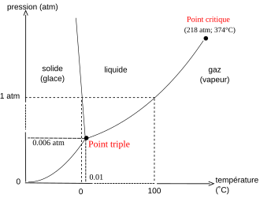

Systèmes thermodynamiques
Un système thermodynamique correspond a l’ensemble de la matière contenue dans une surface fermée (réelle ou fictive) préalablement établie. On considère que tout ce qui ne fait pas partie du système appartient au milieu extérieur.
Un système fermé est un système thermodynamique qui n’échange pas de matière avec le milieu extérieur mais qui réalise des transferts d’énergie avec lui.
Un système isolé est un système qui n’échange ni matière ni énergie avec le milieu extérieur.
Échelles d’observations
Échelle microscopique
On peut considérer un système comme un ensemble de particule en mouvement. Ce mouvement est du à l’agitation thermique. L’observation à cette échelle pose néanmoins un problème : les particules sont indiscernables les unes des autres, il est donc impossible de prévoir le comportement des particules avec la mécanique classique.
Niveau macroscopique
A l’échelle macroscopique, on considère la matière comme un milieu continue ou ses propriétés se manifestent par des grandeurs mesurables (masse,volume,pression,…). Néanmoins, on perds une certaine quantité d’information sur la valeur locale de certaines grandeurs.
Niveau mésoscopique
Le niveau mésoscopique est une niveau intermédiaire qui admet un nombre suffisant de particle pour que les variation aléatoires entre les mesures s’annulent (physique statistique), mais qui reste suffisamment petit pour qu’on puisse considérer la matière qu’il continue comme homogène et continue.*
Variables d’état
On peut représenter l’état d’un système thermodynamique grâce à un ensemble de variable d’état qui en décrivent les propriétés.
Ces variable ne sont pas toujours indépendantes.
Grandeurs extensives et intensives
Il existe deux type de grandeurs qui caractérisent ces variables d’état :
- Les grandeurs extensives, qui sont proportionnelles au volume ou à la quantité de matière d’un système de façon à ce que pour deux sous système $S_1,S_2$ que l’ont réunit pour en former un seul, la variable d’état extensive $X$ vérifie la relation $X(S_1 + S_2) = X(S_1) + X(S_2)$
- Les grandeurs intensives, qui sont indépendantes du volume et de la quantité de matière d’un système ($X(S_1 + S_2) \neq X(S_1) + X(S_2)$)
Exemples
Les grandeurs extensives sont par exemple :
- La masse
- La volume
- La quantité de matière
- L’énergie
Les grandeurs intensives sont elles :
- La concentration
- La température
- La pression
- La masse volumique
On peut remarquer que les grandeurs primaires sont souvent extensives alors que les grandeurs composées sont intensives.
États physiques et phases
Un système peut être constitué de matière dans un unique état physique mais tout de même comporter des sous-parties non miscibles. On parle dans ce cas de phase. On dit qu’il à discontinuité d’une grandeur intensive à l’inter-phase.
Dans un système composé d’un mélange de deux liquides non miscibles (eau et huile), il y à discontinuité de la masse volumique à l’inter-phase.
Un mélange gazeux ne comporte toujours qu’une seule phase.
Équation d’état
Une équation d’état est une relation entre les différentes variables d’état qui décrivent un système thermodynamique à l’équilibre thermodynamique.
L’équation des gaz parfaits $PV = nRT$ est un exemple d’équation d’état.
Équilibre thermodynamique
On dit qu’un système est à l’équilibre thermodynamique lorsque toutes les variables d’état qui le caractérisent sont constantes et homogènes.
L’équilibre thermodynamique résulte d’une combinaison entre :
- l’équilibre thermique, température constante et donc uniforme.
- l’équilibre dynamique, pression constante et donc uniforme.
États de la matière
La matière peut être dans un grand nombre d’états.
On peut par exemple distinguer les états solide, liquide et gazeux :
- A l’échelle macroscopique il se différencient par la masse volumique, $\rho_{solide} > \rho_{liquide} > \rho_{gaz}$
- A l’échelle microscopique, ont peut utiliser l’agitation moléculaire, l’état solide est un état parfaitement ordonné, le liquide est plus désordonné, et le gaz est infiniment bordélique.
État gazeux
Un gaz étant un état par nature difficile à étudier de part sa désorganisation apparente, les physiciens ont défini expérimentalement un modèle qui nous permet d’analyser le comportement d’un gaz en laissant de coté un grand nombre de paramètres.
Après de nombreuses expériences, on obtient l’équation d’état des gaz parfaits : $$PV = nRT$$ Avec :
- $P$ la pression en Pascal (Pa)
- $T$ la température en Kelvin (K)
- $V$ le volume en $m^3$
- $n$ la quantité de matière en mol.
- $R$ la constante des gaz parfaits, $R=8,31 ~J.K^{-1}.\text{mol}^{-1}$
Ce modèle néglige toute interaction entre les particules du gaz et les considère de manière ponctuelle (comme des points de l’espace). Ainsi il ne s’applique qu’a basse pression et à des molécules petites. Pour des systèmes plus complexe on peut utiliser des meilleurs modèles, qui seront donc plus complexes.
Coordonnées de Clapeyron
On peut de plus représenter les courbes isothermes d’un gaz parfait grâce au systèmes des coordonnées de Clapeyron $P = f(V)$.

Ou même avec le temps comme autre variable : 
Ces courbes sont similaire aux courbe d’indifférence du consommateur.
Les gaz sont considérés comme dilatables c’est à dire qu’ils voient leur volume augmenter sous l’effet d’une augmentation de la température.
Ils sont aussi compressibles, c’est à dire qu’il vont voir leur volume diminuer sous l’effet d’une augmentation de la pression.
États condensés
On appelle états condensés les états solide et liquide.
Les états condensés sont très peu dilatables et très peu compressibles. Ainsi, on peut les décrire comme des systèmes indilatables et incompressibles. On peut donc supposer que leur volume reste constant indépendamment des valeurs de température ou de pression.
Changements d’états
On appelle changement d’état le passage d’un corps pur d’un état physique à un autre.

Il peut avoir coexistence de deux états de manière provisoire ou à l’équilibre.
Caractéristiques du changement d’états
On peut représenter les variations de la température du système au cours du temps par une courbe d’analyse thermique $T = f(t)$
Si on considère un système solide auquel on fournit de l’énergie, on observe plusieurs étapes dans la transformation :
- La température augmente dans le système entièrement solide
- La première goutte de liquide apparaît, on à atteint un équilibre $\text{solide} \rightleftharpoons \text{liquide}$
- Le solide se transforme peu à peu en liquide et les deux états coexistent. On appelle cette zone palier de changement d’état
- Le système devient entièrement liquide
- Le système est entièrement liquide et sa température augmente.
- La première bulle de gaz apparaît
- Le liquide se transforme peu à peu en gaz et les deux états coexistent, deuxième palier de changement d’état
- Le système est entièrement gazeux
- La température du système entièrement gazeux continue à augmenter

Température de changement d’état
La température de changement d’état d’un corps est fonction de la pression mais est indépendante du sens de changement d’état.
Chaleur latente de changement d’état
On appelle chaleur latente de changement d’état l’énergie nécessaire à apporter au système pour faire passe $1g$ de corps pur d’un état $1$ à un état $2$ à pression constante. On note cette grandeur $l_{1\rightarrow2}$ et elle s’exprime en joules par gramme (J/g).
Palier de changement d’état
Sur la courbe d’analyse thermique, le palier représente la période pendant laquelle la température du système ne change pas mal gré l’apport ou le retrait d’énergie. Cela indique que toute l’énergie fournie ou retirée du système est utilisée pour effectuer le changement d’état sans augmenter la température. Durant ce palier, il y à coexistence des deux états.
Diagramme de phases
On peut tracer un diagramme de phase pour un corps en fonction de la pression et de la température.

Transformations thermodynamiques
Une transformation thermodynamique est un processus au cours duquel certains variables d’état du système sont modifiées. Le système évolue d’un état initial (EI) à un état final (EF), qui sont des états d’équilibre thermodynamique. Si ces deux états sont identiques, il s’agit d’une transformation cyclique.
Échanges énergétiques
Une transformation thermodynamique comprends des échanges d’énergie entre le système et le milieu extérieur.
Ces échanges peuvent de deux manières
- Le transfert d’énergie mécanique est appelé travail et noté $W$. Il peut corresponde à une force de pression sur le système, à un échange électrique,…
- Le transfert d’énergie thermique est noté $Q$ et correspond à une transmission d’agitation thermique à l’échelle microscopique. Il se traduit donc par un échauffement / refroidissement ou à un changement d’état.
Ces deux échanges correspondent à des énergies ($W$ et $Q$), qui seront donc calculées en Joules ($J$).
On attribue aussi un signe algébrique à l’énergie échangée :
- positive si l’énergie va du milieu extérieur vers le système
- négative si l’énergie va du système vers le milieu extérieur
Si la somme des transferts mécaniques de la transformation est positive le système est dit récepteur, si elle est négative il est dit moteur.
Durées des transformations
Transformations infinitésimales
Les transformations infinitésimales se déroulent entre deux instants infiniment proches. Dans ce cas là, les variables d’état évoluent entre $T$ et $T + dT$ ; $P$ et $P + dP$ et les énergies reçues par le systèmes sont elles aussi infinitésimales, notées $\delta W$ et $\delta Q$.
Transformations finies
Les transformations finies se déroulent entre deux états $A$ et $B$ qui sont à l’équilibre thermodynamique. On considère que les échanges d’énergie avec le milieu extérieur sont instantanées. On note ainsi les variation des grandeurs d’état $\Delta T = T_2 - T_1$ et les énergies totales reçues par le système lors de la transformation $W$ et $Q$.
Vocabulaire
On parle de transformation isotherme si au cours d’une transformation thermodynamique, la température du système reste constante. De même, si la pression reste constante il s’agit d’une transformation isobare. Et si le volume rest contant il s’agit d’une transformation isochore.
Si au cours d’une transformation, la température du milieu extérieur reste constante, il s’agit donc d’une transformation monotherme et le milieu est appelé un thermostat. Si la pression du milieu extérieur reste constante, la transformation est alors monobare, le milieu est un pressostat.
Transformation rapides et lentes
Transformation quasi-statique
Une transformation est dite quasi-statique si elle s’effectue suffisamment lentement pour qu’on considère que les modification du système, notamment par échanges d’énergie, sont continus, et que le système est donc à chaque instant $t$ à l’équilibre thermodynamique. Cet équilibre est néanmoins en changement infinitésimal perpétuel.
Transformation réversible
Une transformation réversible est une transformation quasi-statique qui est aussi renversable, c’est à dire qu’il est possible de revenir à la situation initiale en repassant par les même états intermédiaires d’équilibre. On considère donc qu’il y à équilibre thermodynamique à tout instant.
En réalité une transformation n’est jamais vraiment réversible (énergie perpetuelle), mais c’est un modèle, comme tout en physique donc on l’utilisera quand même.
Transformation non quasi-statique
Si une transformation est brutale ou rapide, elle n’est pas quasi-statique, donc non réversible. On considère qu’elle passe directement d’un état à un autre sans transition.
Transferts d’énergie mécanique
Un système thermodynamique peut recevoir de l’énergie mécanique du milieu extérieur, on l’appelle travail élémentaire des forces de pression et il s’écrit :
$$ \delta W = -P_\text{ext} dV$$
Cette définition est liée au travail infinitésimal d’une force ($\delta W$) et à la force de pression extérieure :
$$
\overrightarrow{F_\text{ext}} = -P_\text{ext}S \overrightarrow{e_x}
$$
donc
$$
\delta W = \overrightarrow{F} \times \overrightarrow{d}l = -P_\text{ext}S\overrightarrow{e_x} \times dx~\overrightarrow{e_x} = -P_\text{ext} S~dx = -P_\text{ext} dV
$$